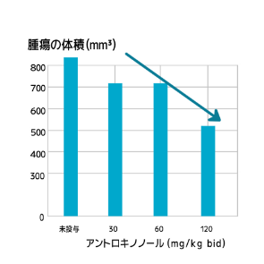
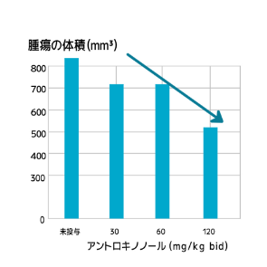

1.肺腺がんに対する薬効試験
アントロキノノールを肺腺がんの患者に経口投与した場合の投与量と肺腺がんの抑制効果には、正の相関関係があることが分かります。 投与量が多いほど、腫瘍の大きさへの抑制効果が顕著になります。
 

2.大細胞肺がんに対する薬効試験
アントロキノノールを大細胞肺がんの患者に経口投与した結果、投与量と大細胞肺がんの抑制効果には、 正の相関関係があることが分かります。投与量が多いほど、腫瘍の大きさへの抑制効果が顕著になります。


3.乳がんに対する薬効試験
アントロキノノールを乳がんの患者に経口投与した結果、投与量と乳がんの抑制効果には、正の相関関係があることが分かります。 投与量が多いほど、腫瘍の大きさへの抑制効果が顕著になります。

4.がん細胞の骨転移の抑制に関する薬効試験
乳がん及び前立腺がんで骨転移のある患者を５つのグループに分け､第１群には､賦形剤（コーン油）を20ml/kg/日で経口投与しました。 第２群には､初日及び14日目にゾレドロン酸（がん骨転移治療薬）0.1mg/kgを注射しました。 第３・４・５群には､連続25日間､アントロキノノールをそれぞれ30・60・90mg/kg/日で経口投与しました。 この結果､乳がん及び前立腺がんの患者の溶骨状況が明らかに抑制されていることが分かりました。


5.がんが惹起（じゃっき）する骨疼痛の緩和に関する薬効試験
骨転移のあるがん患者にアントロキノノールを経口投与した結果、投与量とがんによって引き起こされる骨疼痛の閾値には、 正の相関関係があることが分かります。閾値が高いほど、耐えられる疼痛の度合いも大きくなることを示します。

6.乳がん細胞に対する誘導試験 （動物実験）
乳腺腫瘍の雌ラット80匹を５つの群に分け、それぞれベニクスノキタケ（ベニクスノキタケは英名Antrodia camphorataからACと略される）低用量群、 ベニクスノキタケ高用量群、アントロキノノール高用量群、パクリタキセル群（現在最も投与される頻度の高い抗がん剤）として投与しました。実験結果から、ベニクスノキタケ群、 アントロキノノール群、パクリタキセル群に関わらず、10mm未満の乳腺腫瘍はいずれも顕著に縮小しました。しかし、10mm超の乳腺腫瘍では、 アントロキノノール群のみに顕著な縮小が認められました。

7.アントロキノノールの非小細胞肺がんの第Ⅰ相臨床試験結果 （動物実験）
台湾で行われたアントロキノノールの非小細胞肺がんの第Ⅰ相臨床試験の結果が公開されましたので、ここにご紹介します。 試験対象者は13名。全員、非小細胞肺がんステージ４と診断されています。 この方たちに連続４週間の試験期間において、用量を少しずつ増量し目的の結果が得られるまで続ける方法（漸次増量法）と、標準用量（４５０、６００mg/日）の投与をする方法を行ったところ、いずれも明らかな用量制限毒性（DLT）（これ以上の増量ができない理由となる毒性（副作用）のこと）は認められませんでした。したがってアントロキノノールが良好な安全性と耐性を有することは明らかです。 13名の患者のうち、1名は２週間の治療を受け、試験終了時点で腫瘍の直径が41mmから31mmに縮小しました。3名の患者には連続３ヶ月経口投与し、安定した病状が維持されました。
がん治療のカギを握るRasタンパク
肺がんは大きく分けると､小細胞肺がんと非小細胞肺がんの２つのタイプがあります。 非小細胞肺がんには､さらに腺がん､扁平上皮がん､大細胞がんなどにわけることができます。 日本人に多いのが非小細胞肺がんの方で､肺がんの約６０％を占めるのが腺がんです。 次に扁平上皮がんが多くみられます。大細胞がんや小細胞がんは比較的発症頻度の低いがんです。
8.非小細胞肺がんの新薬として最終臨床試験（第Ⅲ相試験）準備中
現在アントロキノノールは、膵臓がん、肝臓がん、非小細胞肺がん、そして急性骨髄性白血病の新薬として開発が進められています。冒頭でご紹介したように、既にアメリカのＦＤＡ（全米食品医薬品局）から、これらの薬が希少疾病用医薬品（ＯＤ）の指定を得ています。今後、臨床試験が順調に進めば、新しい抗がん剤として認可され、臨床現場で使われる日は遠くないことでしょう。 現在ＦＤＡのルールに従って、非小細胞肺がんは第Ⅱ相試験で良好な結果を出しており、膵臓がんでは第Ⅰ相臨床試験目前といったところです。 統計上、非小細胞肺がん患者はＲａｓタンパクにおいて変異の発生率は30〜35％であり、一方、膵臓がんでは90％と高率です。そのためＲａｓタンパクに作用するアントロキノノールの有効性は高いと考えられます。 ＷＨＯによると、２０１２年に世界で膵臓がんで死亡した患者は33万人であり、全てのがんの死亡患者数では７位、アメリカでは４位です。 膵臓がんは最も悪性度が高く難治性のがんであり、その９割以上は腺がんに属します。自覚症状が少なく、発見された時には既に進行し転移していることが多いと言われています。５年生存率は５％以下です。 多くの患者が手術では根治できず、化学療法もあまり効果がありません。現在の医学界には、「膵臓がんの治療に対し、患者に提供できるべき有効な薬物はない」という悲観的なムードがあります。 それだけに、Ｒａｓタンパクに働きかけてがんの増殖を抑えるアントロキノノールへの期待は大きいようです。 また非小細胞肺がんも治療の難しいがんです。新薬承認に向けた臨床試験は第Ⅰ相から第Ⅲ相までですので、アントロキノノールは次が最後の臨床試験です。このことは肺がんの患者にとって大きな希望であり、がん治療における新たな一歩となりそうです。
9.正常細胞を傷つけない3つの抗がん働き。臨床例では総改善率は70％
これまでの研究からアントロキノノールには、アポトーシス誘導、細胞毒性、慢性炎症の抑制という３つの機能によって、がん細胞を抑制、消滅させる力があることがわかりました。 ただしこれらの働きにおいて特に強調したいのは、この物質の持つ強力な抗がん性ではありません。がんの増殖を止める、炎症を抑えるといった確実でありながら穏やかな作用です。細胞毒性に関しても、実際はがん細胞が自らのタンパク質を分解して消滅していきます。いずれも正常細胞を傷つけない、がん細胞をも自然のプログラムに沿って消滅させるという働きです。 このことは、これまでの「毒をもって毒を制す」的な攻撃的ながん治療、患者の命を危険にさらしてがんを殺す治療からの転換であり、今後のがん治療の在り方を示すものだと思われます。 実際、現在開発されている抗がん剤の多くは、がん細胞だけをターゲットにした分子標的薬です。まだ決定的なものはできていませんが、アントロキノノールの抗がん作用はその方向性を示す好例だといえるでしょう。 アントロキノノールは既にがん患者を対象に臨床試験を行っていますが、その効果は、総改善率７０%となっています。